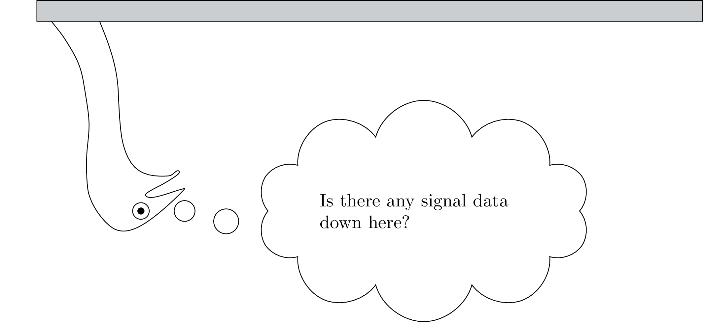

7 Signal data extraction14

As mentioned in the default workflow of Chapter @ref(chap:overview}, after querying the symbolic annotation structure and dereferencing its time information, the result is a set of items with associated time stamps. It was necessary that the emuR package contain a mechanism for extracting signal data corresponding to this set of items. As illustrated in Chapter @ref(chap:wrassp}, wrassp provides the R ecosystem with signal data file handling capabilities as well as numerous signal processing routines. emuR can use this functionality to either obtain pre-stored signal data or calculate derived signal data that correspond to the result of a query. Figure @ref(fig:sigDataExtr}A shows a snippet of speech with overlaid annotations where the resulting SEGMENT of an example query (e.g., "Phonetic == ai") is highlighted in yellow. Figure 7.1B displays a time parallel derived signal data contour as would be returned by one of wrassp’s file handling or signal processing routines. The yellow segment in Figure 7.1B marks the corresponding samples that belong to the ai segment of Figure 7.1A.
Figure 7.1: Segment of speech with overlaid annotations and time parallel derived signal data contour.
The R code snippet below shows how to create the demo data that will be used throughout this chapter.
# load the package
library(emuR)
# create demo data in directory provided by the tempdir() function
create_emuRdemoData(dir = tempdir())
# get the path to a emuDB called "ae" that is part of the demo data
path2directory = file.path(tempdir(), "emuR_demoData", "ae_emuDB")
# load emuDB into current R session
ae = load_emuDB(path2directory)7.1 Extracting pre-defined tracks
To access data that are stored in files, the user has to define tracks for a database that point to sequences of samples in files that match a user-specified file extension. The user-defined name of such a track can then be used to reference the track in the signal data extraction process. Internally, emuR uses wrassp to read the appropriate files from disk, extract the sample sequences that match the result of a query and return values to the user for further inspection and evaluation. The R code snippet below shows how a signal track that is already defined in the ae demo database can be extracted for all annotation items on the Phonetic level containing the label ai.
# list currently available tracks
list_ssffTrackDefinitions(ae)## name columnName fileExtension
## 1 dft dft dft
## 2 fm fm fms# query all "ai" phonetic segments
ai_segs = query(ae, "Phonetic == ai")
# get "fm" track data for these segments
# Note that verbose is set to FALSE
# only to avoid a progress bar
# being printed in this document.
ai_td_fm = get_trackdata(ae,
seglist = ai_segs,
ssffTrackName = "fm",
verbose = FALSE)
# show summary of ai_td_fm
summary(ai_td_fm)## Emu track data from 6 segments
##
## Data is 4 dimensional from track fm
## Mean data length is 30.5 samplesBeing able to access data that is stored in files is important for two main reasons. Firstly, it is possible to generate files using external programs such as VoiceSauce (Shue et al. 2011), which can export its calculated output to the general purpose SSFF file format. This file mechanism is also used to access data produced by EMA, EPG or many other forms of signal data recordings. Secondly, it is possible to track, save and access manipulated data such as formant values that have been manually corrected. It is also worth noting that the get_trackdata() function has a predefined track which is always available without it having to be defined. The name of this track is MEDIAFILE_SAMPLES which references the actual samples of the audio files of the database. The R code snippet below shows how this predefined track can be used to access the audio samples belonging to the segments in ai_segs.
# get media file samples
ai_td_mfs = get_trackdata(ae,
seglist = ai_segs,
ssffTrackName = "MEDIAFILE_SAMPLES",
verbose = FALSE)
# show summary of ai_td_fm
summary(ai_td_mfs)## Emu track data from 6 segments
##
## Data is 1 dimensional from track MEDIAFILE_SAMPLES
## Mean data length is 3064.333 samples7.2 Adding new tracks
As described in detail in Section 8.7, the signal processing routines provided by the wrassp package can be used to produce SSFF files containing various derived signal data (e.g., formants, fundamental frequency, etc.). The R code snippet below shows how the add_ssffTrackDefinition() can be used to add a new track to the ae emuDB. Using the onTheFlyFunctionName parameter, the add_ssffTrackDefinition() function automatically executes the wrassp signal processing function ksvF0 (onTheFlyFunctionName = "ksvF0") and stores the results in SSFF files in the bundle directories.
# add new track and calculate
# .f0 files on-the-fly using wrassp::ksvF0()
add_ssffTrackDefinition(ae,
name = "F0",
onTheFlyFunctionName = "ksvF0",
verbose = FALSE)
# show newly added track
list_ssffTrackDefinitions(ae)## name columnName fileExtension
## 1 dft dft dft
## 2 fm fm fms
## 3 F0 F0 f0# show newly added files
library(tibble) # convert to tibble only to prettify output
as_tibble(list_files(ae, fileExtension = "f0"))## # A tibble: 7 x 4
## session bundle file absolute_file_path
## <chr> <chr> <chr> <chr>
## 1 0000 msajc003 msajc00… /private/var/folders/yk/8z9tn7kx6hbcg_9n4c1sld…
## 2 0000 msajc010 msajc01… /private/var/folders/yk/8z9tn7kx6hbcg_9n4c1sld…
## 3 0000 msajc012 msajc01… /private/var/folders/yk/8z9tn7kx6hbcg_9n4c1sld…
## 4 0000 msajc015 msajc01… /private/var/folders/yk/8z9tn7kx6hbcg_9n4c1sld…
## 5 0000 msajc022 msajc02… /private/var/folders/yk/8z9tn7kx6hbcg_9n4c1sld…
## 6 0000 msajc023 msajc02… /private/var/folders/yk/8z9tn7kx6hbcg_9n4c1sld…
## 7 0000 msajc057 msajc05… /private/var/folders/yk/8z9tn7kx6hbcg_9n4c1sld…# extract newly added trackdata
ai_td = get_trackdata(ae,
seglist = ai_segs,
ssffTrackName = "F0",
verbose = FALSE)
# show summary of ai_td
summary(ai_td)## Emu track data from 6 segments
##
## Data is 1 dimensional from track F0
## Mean data length is 30.5 samples7.3 Calculating tracks on-the-fly
With the wrassp package, we were able to implement a new form of signal data extraction which was not available in the legacy system. The user is now able to select one of the signal processing routines provided by wrassp and pass it on to the signal data extraction function. The signal data extraction function can then apply this wrassp function to each audio file as part of the signal data extraction process. This means that the user can quickly manipulate function parameters and evaluate the result without having to store to disk the files that would usually be generated by the various parameter experiments. In many cases this new functionality eliminates the need for defining a track definition for the entire database for temporary data analysis purposes. The R code snippet below shows how the onTheFlyFunctionName parameter of the get_trackdata() function is used.
ai_td_pit = get_trackdata(ae,
seglist = ai_segs,
onTheFlyFunctionName = "mhsF0",
verbose = FALSE)
# show summary of ai_td
summary(ai_td_pit)## Emu track data from 6 segments
##
## Data is 1 dimensional from track pitch
## Mean data length is 30.5 samples7.4 The resulting object: trackdata vs. emuRtrackdata
The default resulting object of a call to get_trackdata() is of class trackdata (see R code snippet below). The emuR package provides multiple routines such as dcut(), trapply() and dplot() for processing and visually inspecting objects of this type (see harrington:2010a and Section 3.5 for examples of how these can be used).
# show class vector of ai_td_pit
class(ai_td_pit)## [1] "trackdata"As the trackdata object is a fairly complex nested matrix object with internal reference matrices, which can be cumbersome to work with, the emuR package introduces a new equivalent object type called emuRtrackdata that essentially is a flat data.frame object. This object type can be retrieved by setting the resultType parameter of the get_trackdata() function to emuRtrackdata. The R code snippet below shows how this can be achieved.
ai_emuRtd_pit = get_trackdata(ae,
seglist = ai_segs,
onTheFlyFunctionName = "mhsF0",
resultType = "emuRtrackdata",
verbose = FALSE)
# show first row (convert to tibble only to prettify output)
as_tibble(ai_emuRtd_pit[1, ])## # A tibble: 1 x 21
## sl_rowIdx labels start end utts db_uuid session bundle start_item_id
## <int> <chr> <dbl> <dbl> <chr> <chr> <chr> <chr> <int>
## 1 1 ai 863. 1016. 0000… 0fc618… 0000 msajc… 161
## # … with 12 more variables: end_item_id <int>, level <chr>,
## # start_item_seq_idx <int>, end_item_seq_idx <int>, type <chr>,
## # sample_start <int>, sample_end <int>, sample_rate <int>,
## # times_orig <dbl>, times_rel <dbl>, times_norm <dbl>, T1 <dbl># show relative time values of the first segment
# (relative time values always start at 0 for every segment)
ai_emuRtd_pit[ai_emuRtd_pit$sl_rowIdx == 1, ]$times_rel## [1] 0 5 10 15 20 25 30 35 40 45 50 55 60 65 70 75 80
## [18] 85 90 95 100 105 110 115 120 125 130 135 140 145# show original time values of the first segment
# (absolute time values always start at the original
# time stamp for that sample within the track)
ai_emuRtd_pit[ai_emuRtd_pit$sl_rowIdx == 1, ]$times_orig## [1] 867.5 872.5 877.5 882.5 887.5 892.5 897.5 902.5 907.5 912.5
## [11] 917.5 922.5 927.5 932.5 937.5 942.5 947.5 952.5 957.5 962.5
## [21] 967.5 972.5 977.5 982.5 987.5 992.5 997.5 1002.5 1007.5 1012.5As can be seen by the first row output of the R code snippet above, the emuRtrackdata object is an amalgamation of both a segment list and a trackdata object. The first sl_rowIdx column of the ai_emuRtd_pit object indicates the row index of the segment list the current row belongs to, the times_rel and times_orig columns represent the relative time and the original time of the samples contained in the current row (see above R code snippet) and T1 (to Tn in n dimensional trackdata) contains the actual signal sample values. It is also worth noting that the emuR package provides a function called create_emuRtrackdata(), which allows users to create emuRtrackdata from a segment list and a trackdata object. This is beneficial as it allows trackdata objects to be processed using functions provided by the emuR package (e.g., dcut() and trapply()) and then converts them into a standardized data.frame object for further processing (e.g., using R packages such as lme4 or ggplot2 which were implemented to use with data.frame objects). The R code snippet below shows how the create_emuRtrackdata() function is used.
# create emuRtrackdata object
ai_emuRtd_pit = create_emuRtrackdata(sl = ai_segs,
td = ai_td_pit)
# show first row and
# selected columns of ai_emuRtd_pit
ai_emuRtd_pit[1, ]## sl_rowIdx labels start end session bundle level type
## 1 1 ai 862.875 1015.825 0000 msajc010 Phonetic SEGMENT
## times_orig times_rel times_norm T1
## 1 867.5 0 0 134.7854The general question remains as to when to use the trackdata and when to use the emuRtrackdata object and what the benefit of each class is. The trackdata object has a number of associated class functions (e.g. trapply(), dcut(), dcut() and eplot()) that ease data manipulation and visualization. Further, it avoids data redundancy and therefore has a smaller memory footprint than the emuRtrackdata object (this is usually negligible on current systems); however, this makes it rather difficult to work with. The emuRtrackdata object is intended as a long term replacement for the trackdata object as it contains all of the information of the corresponding trackdata object as well as its associated segment list. As is often the case with tabular data, the emuRtrackdata object carries certain redundant information (e.g. segment start and end times). However, the benefit of having a data.frame object that contains all the information needed to process the data is the ability to replace package specific functions (e.g. trapply() etc.) with standardized data.frame processing and visualization procedures that can be applied to any data.frame object independent of the package that generated it. Therefore, the knowledge that is necessary to process an emuRtrackdata object can be transferred to/from other packages which is not the case for trackdata object. Future releases of the emuR package as well as this manual will contain various examples of how to replace the functionality of the package-specific functions mentioned above with equivalent data manipulation and visualization using the dplyr as well as the ggplot2 packages.
7.5 Conclusion
This chapter introduced the signal data extraction mechanics of the emuR package. The combination of the get_trackdata() function and the file handling and signal processing abilities of the wrassp package (see Chapter 8 for further details) provide the user with a flexible system for extracting derived or complementary signal data belonging to their queried annotation items.
References
Shue, Y.-L, Keating P., Vicenik C., and Yu K. 2011. “VoiceSauce: A Program for Voice Analysis.” In Proceedings of the Icphs, XVII:1846–9.